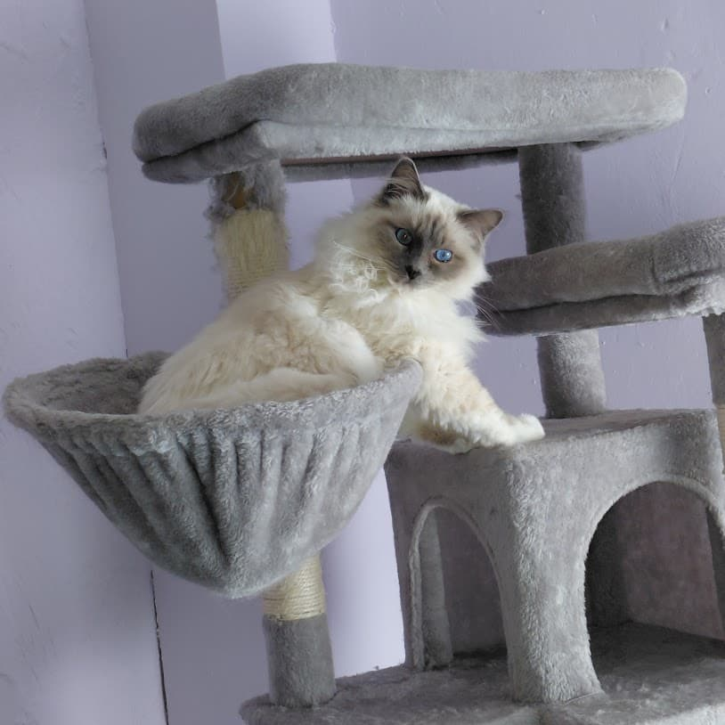

Chatterie familiale Trésors des Fagnes
Élevés avec amour au cœur des Fagnes belges, nos chatons Sacré de Birmanie grandissent dans un environnement familial, calme et attentionné.
Voir les ChatonsHistoire de la chatterie
La chatterie Trésors des Fagnes est née d'une véritable passion pour les chats et plus particulièrement pour le Sacré de Birmanie. Avec le temps, cette passion est devenue une aventure familiale remplie d'amour, de douceur et de moments uniques partagés avec nos compagnons à quatre pattes.
Pourquoi le Sacré de Birmanie ?
Le Sacré de Birmanie nous a séduits par son caractère exceptionnel. C'est un chat doux, affectueux, calme et très proche de l'humain. Son regard intense, son élégance naturelle et sa grande tendresse en font un compagnon idéal pour la vie de famille.
Notre élevage
Nos chatons grandissent au sein de notre foyer, dans une ambiance familiale, entourés d'attention et de douceur. Ils sont habitués aux bruits du quotidien, au contact humain et à la vie de famille afin de favoriser leur sociabilisation et leur équilibre dès leur plus jeune âge.
Nos engagements
Nous accordons une grande importance au bien-être et à la santé de nos chatons. Ils quittent la chatterie identifiés, vaccinés, vermifugés et accompagnés des documents nécessaires. Nous restons disponibles après l'adoption pour accompagner les familles tout au long de la vie du chaton. 😊
Galerie

Blue - Père Birman Blue

Blue - Père Birman blue

Toujours Blue - Père Birman blue

Tokyo - Mère Birmane Lilac

Tockyo - Mère Birmane

Tockyo - Mère Birmane


Aloys - Une future maman pleine de douceur — Birmane seal point

Aloys

Blue

Blue

Mushù

Tokyo et sa fille Aloys

Tokyo

Tokyo

Tokyo

Vénus

Mushù

Mushù

Mushù 😂